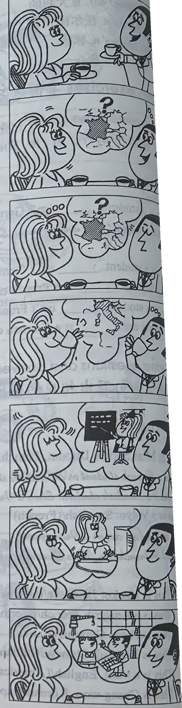

Lesson content · 课文
Lesson 7: Are you a teacher? · 你是教师吗？
Listen then answer this question. 听录音，然后回答问题。
What is Robert’s job?
罗伯特是做什么工作的？
ROBERT: I am a new student. My name’s Robert.
SOPHIE: Nice to meet you. My name’s Sophie.
ROBERT: Are you French?
SOPHIE: Yes, I am.
SOPHIE: Are you French, too?
ROBERT: No, I am not.
SOPHIE: What nationality are you?
ROBERT: I’m Italian.
ROBERT: Are you a teacher?
SOPHIE: No, I’m not.
ROBERT: What’s your job?
SOPHIE: I’m a keyboard operator.
SOPHIE: What’s your job?
ROBERT: I’m an engineer.

New words and expressions · 生词和短语
| Word · 单词 | Pronunciation · 音标 | Meaning · 词义 |
|---|---|---|
| I | /aɪ/ | pron. 我 |
| am | /æm/ | v. be 动词现在时第一人称单数 |
| are | /ɑː/ | v. be 动词现在时复数 |
| name | /neɪm/ | n. 名字 |
| what | /wɒt/ | adj. & pron. 什么 |
| nationality | /ˌnæʃəˈnæləti/ | n. 国籍 |
| job | /dʒɒb/ | n. 工作 |
| keyboard | /ˈkiːbɔːd/ | n. 电脑键盘 |
| operator | /ˈɒpəreɪtə/ | n. 操作人员 |
| engineer | /ˌendʒɪˈnɪə/ | n. 工程师 |
Notes on the text · 课文注释
- My name’s = My name is.
- I’m /aɪm/ = I am. 口语中经常使用这种缩略形式。
- What’s your job? 你是做什么工作的？What’s = What is.
- What nationality are you? 用来询问对方国籍。也可以问 Where are you from?
Chinese translation · 参考译文
罗伯特：我是新来的学生，我的名字叫罗伯特。
索菲娅：很高兴见到你。我的名字叫索菲娅。
罗伯特：你是法国人吗？
索菲娅：是的，我是法国人。
索菲娅：你也是法国人吗？
罗伯特：不，我不是。
索菲娅：你是哪国人？
罗伯特：我是意大利人。
罗伯特：你是教师吗？
索菲娅：不，我不是。
罗伯特：你是做什么工作的？
索菲娅：我是电脑录入人员。
索菲娅：你是做什么工作的？
罗伯特：我是工程师。
Practice · 课文练习
Understand the lesson · 课文理解
Comprehension · 理解题
Answer the question about the lesson text. 根据课文回答问题。
-
comprehension: Comprehension · 理解题 — What is Robert’s job?
Practice worksheet · 配套练习
A. Dialogue
Read this dialogue. Fill in the missing words. 填空。
-
worksheet: A. Dialogue — Robert: I ____ a new student. ____ name’s Robert.
Sophie: Nice to ____ you. ____ name’s Sophie.
Robert: ____ you French?
Sophie: Yes, I ____. ____ you French, ____?
Robert: No, I ____ not. I’m ____. What’s ____ job, Sophie?
Sophie: I’m a ____.
B. Vocabulary
What are these jobs? Join the words and write them with a. 将两栏中的单词组成表示职业的词语，并在前面加上不定冠词 a。
Endings: a. man · b. mechanic · c. dresser · d. driver · e. operator · f. woman
Example · 例句
police + woman → a policewoman
-
worksheet: B. Vocabulary — taxi
-
worksheet: B. Vocabulary — post
-
worksheet: B. Vocabulary — hair
-
worksheet: B. Vocabulary — keyboard
-
worksheet: B. Vocabulary — car
C. Numbers — figures
Write these numbers in figures. 用阿拉伯数字表示以下数词。
-
worksheet: C. Numbers — figures — sixteen
-
worksheet: C. Numbers — figures — twelve
-
worksheet: C. Numbers — figures — twenty
-
worksheet: C. Numbers — figures — nineteen
-
worksheet: C. Numbers — figures — eighteen
-
worksheet: C. Numbers — figures — fifteen
C. Numbers — words
Write these numbers in words. 用英语数词表示以下数字。
-
worksheet: C. Numbers — words — 17
-
worksheet: C. Numbers — words — 12
-
worksheet: C. Numbers — words — 11
-
worksheet: C. Numbers — words — 20
-
worksheet: C. Numbers — words — 8
-
worksheet: C. Numbers — words — 13
Grammar practice · 语法练习
I. Complete with am, is, or are
This section practices am/is/are in questions, short answers, negatives, jobs, and nationalities. Prompts include:
- I ___ a new student. My name ___ Alice.
- ___ you a new student, too? Yes, I ___ .
- ___ Hans German? Yes, he ___ .
- ___ Sophie German, too? No, she ___ not. She ___ French.
- I ___ an English teacher. My sister ___ an English teacher, too.
- You ___ my friend. She ___ my friend, too.
- ___ you Italian? No, I ___ not. I ___ Swedish.
- What ___ your job? I ___ a keyboard operator.
- What ___ his job? He ___ an engineer.
- ___ his brother an engineer, too? No, he ___ not. He ___ a teacher.
II. Answer with Yes, I am. / No, I'm not. I'm ...
Answer each question according to the examples.
- Are you a boy?
Example: Yes, I am. / No, I'm not. I'm a girl.
- Are you a girl?
- Are you a student?
- Are you a man?
- Are you a woman?
- Are you an engineer?
- Are you a keyboard operator?
- Are you a nurse?
- Are you Mary? (Jane)
- Are you a keyboard operator? (teacher)
- Are you Chinese? (Korean)
- Are you a postman? (milkman)
- Are you a hairdresser? (taxi driver)
- Are you a mechanic? (policeman)
- Are you a housewife? (air hostess)
- Are you a policewoman? (nurse)
III. Answer using the cues
Examples: Are you a teacher? (yes) -> Yes, I am. What nationality are you? (English) -> I'm English.
- What's your job? (nurse)
- Are you French or German? (French)
- Are you an engineer? (no/mechanic)
- What's your job? (air hostess)
- What nationality is he? (Swedish)
- Is he a doctor or a nurse? (doctor)
- What's your job? (policeman)
- Is she Korean or Japanese? (Japanese)
- Are you a milkman? (no/hairdresser)
- What nationality are you? (Chinese)
- Is it an English car? (no/German)
- Is he a German student? (no/Italian)
- Are you a keyboard operator? (yes)
- Is she a keyboard operator, too? (no/housewife)
Your notes and answers
Use this space for longer responses or exercises that do not have an individual answer box.